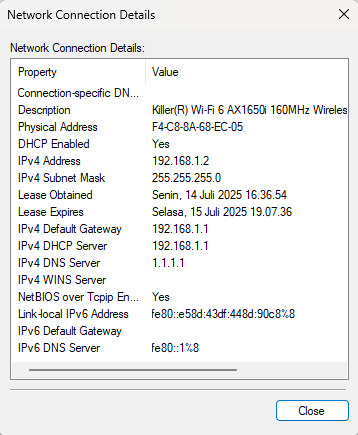

← Kembali ke Daftar Materi
Konfigurasi IP di Windows
1. Klik simbol pencarian 🔍 di taskbar Windows
2. Ketik Control Panel lalu klik Open
3. Klik Network and Internet → Network and Sharing Center → Change adapter settings
Melihat informasi konfigurasi alamat IP
1. Klik kanan Ethernet → Status → Details...

Merubah konfigurasi alamat IP
1. Klik kanan Ethernet → Properties
2. Klik 2X pada Internet Protocol Version 4 (TCP/IPv4)
3. Terdapat masing-masing 2 pilihan konfigurasi IP address & DNS Server
Obtain an IP Address Automatically: mengatur alamat IP secara otomatis
Use the following IP address: mengatur alamat IP secara manual
Isikan IP Address, Subnet mask & Default gateway
Obtain DNS Server Address Automatically: mengatur alamat DNS Server secara otomatis
Use the following DNS Server addresses: mengatur alamat DNS Server secara manual
Isikan Preferred DNS Server & Alternate DNS Server
Pengujian Koneksi Jaringan
1. Klik simbol pencarian 🔍 di taskbar Windows
2. Ketik CMD atau Command Prompt lalu klik Open
3. Uji koneksi jaringan menggunakan perintah ping dengan format seperti berikut:
ping [alamat tujuan]
4. Tekan Enter.
Contoh:
Pengujian ke alamat web
ping [alamat web]
ping google.com
Pengujian ke perangkat jaringan (PC, Router, dll)
ping [alamat IP]
ping 192.168.10.1